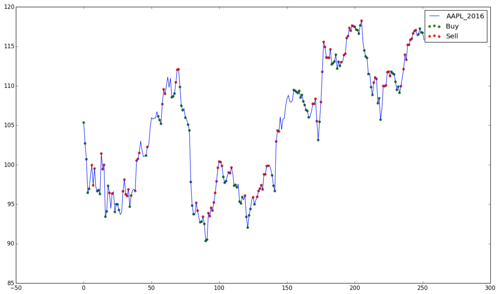
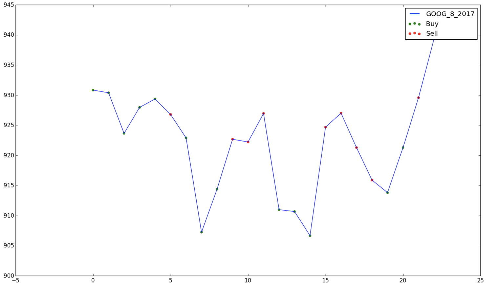
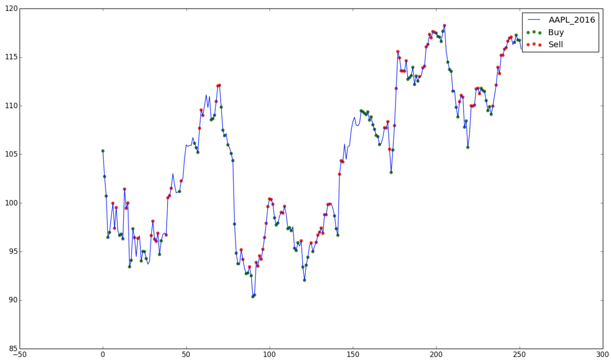
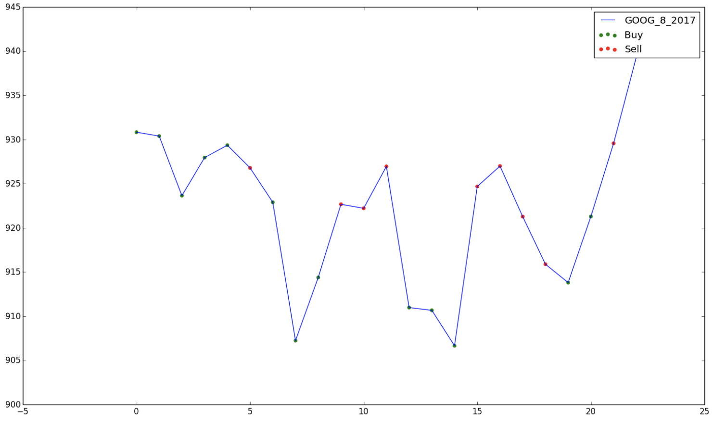

Image Captioning Conditioned on Part of Speech
This work was done in collaboration with the Machine Learning group at UIUC. Image captioning is an ambiguous problem, since there are many suitable captions for an image. To address ambiguity, beam search is the de facto method for sampling multiple captions, but is unfortunately computationally expensive and known to produce generic captions. We first predict a meaningful summary of the image, then generate the caption based on that summary. We use part-of-speech as summaries, since our summary should drive caption generation.
Machine Learning Jet Physics at CERN
A series of works close to my heart was on using machine learning to discriminate between different physics processes at the Large Hadron Collider. Our work on hierarchical clustering facilitated the advent of sophisticated ML techniques in deciphering some fundamental physical processes. The idea is that scattering processes leave behind a signature, or trail, of the underlying particles involved in the process. We determined from the data (now public) that the energy deposition in the LHC's calorimeters is the most discriminating feature, and the deposition pattern is the signature of these particles.
Short-term Stock Q-Trader
It is almost everyday that I wish I could reverse time and buy the stock yesterday that just rose today by an inexplicable 200%. With such hope, I tried to build an implementation of Q-learning applied to (short-term) stock trading. The model uses n-day windows of closing prices to determine if the best action to take at a given time is to buy, sell or sit. As a result of the short-term state representation, the model is not very good at making decisions over long-term trends, but is quite good at predicting peaks and troughs. Shown below are performances on Alibaba (BABA), Apple (AAPL) and Google (GOOG.A).
 



Using ML for Spectroscopy Signal Classification
This work on identifying a multitude of complex electron signal structures was done in collaboration with the University of Mainz, Germany. With machine learning models, we develop a scheme based on these traits to analyze and classify cyclotron radiation emission spectroscopy signals. Proper understanding and use of these traits will be instrumental to improve cyclotron frequency reconstruction and boost our ability to achieve world-leading sensitivity on the tritium endpoint measurement in the future.